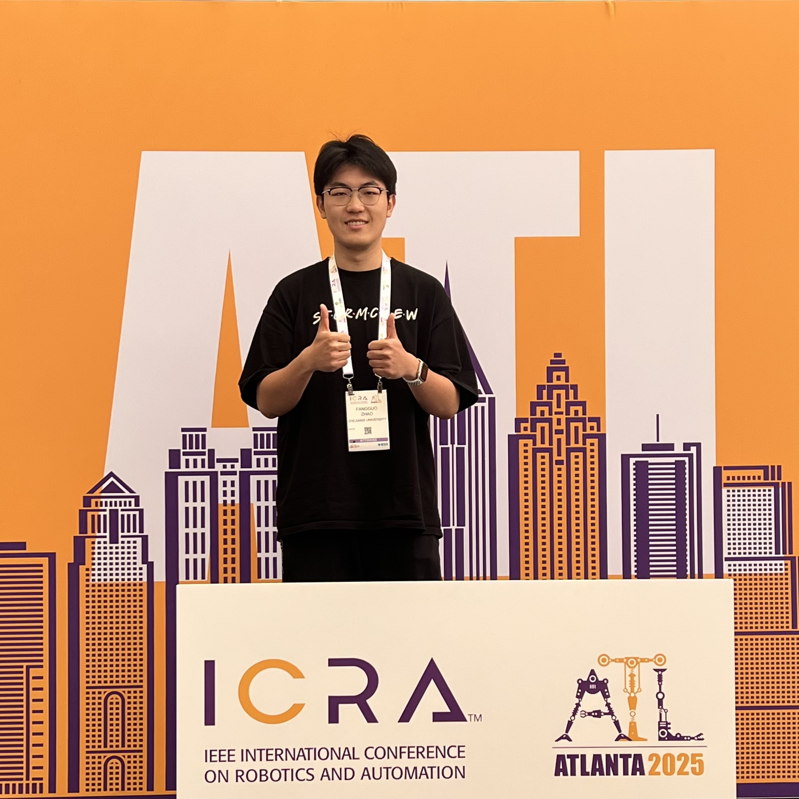
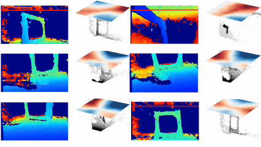
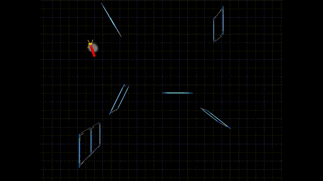
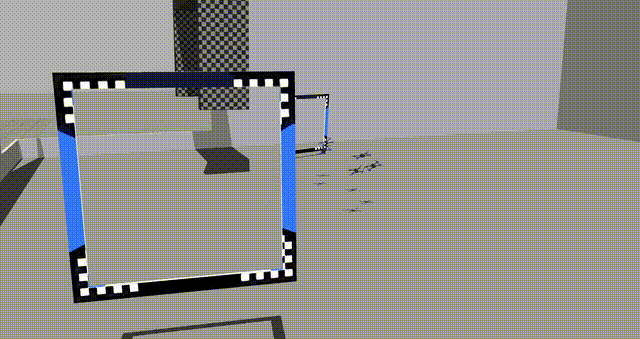
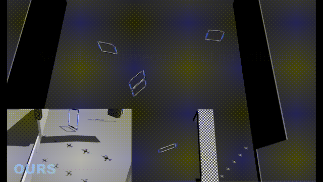

Fangguo Zhao [赵方国]
I am a third-year Ph.D. student in the College of Control Science and Engineering at Zhejiang University, where I am advised by Prof. Shuo Li. Prior to this, I received my B.S. degree in Automation from Northwestern Polytechnical University in 2023.
Email: zhaofangguo [at] zju.edu.cn

Research Content
My research centers on the intersection of trajectory planning, control, and perception for highly agile autonomous racing drones. I am deeply interested in pushing the physical limits of aerial robotics through high-speed, time-optimal trajectory generation, particularly in the context of vision-based racing and competitive multi-drone scenarios. A core aspect of my work involves developing robust model-based control methodologies to ensure reliable and aggressive flight in complex, dynamic environments.
Currently, I am actively exploring the integration of advanced learning-based methods with real-time control to enhance robotic planning and vision-guided navigation, aiming for stronger zero-shot generalization in agile flight. Furthermore, my research is expanding into the emerging field of UAV Vision-Language Navigation (VLN), where I am developing to empower drones with advanced spatial reasoning and instruction-following capabilities.
I am always eager to explore new research directions and push the boundaries of intelligent aerial systems. Please feel free to reach out—I am highly open to collaboration and welcome opportunities to connect and innovate together.
Selected Publications

Vision-guided MPPI for agile drone racing: Navigating arbitrary gate poses via neural signed distance fields

Beyond Reference Trajectories: A Waypoint-Based Model Predictive Path Integral Control for Agile Drone Racing

Gate-aware online planning for two-player autonomous drone racing

Time-optimal trajectory generation with input boundaries and dynamic waypoints constraints for a swarm of quadrotors
